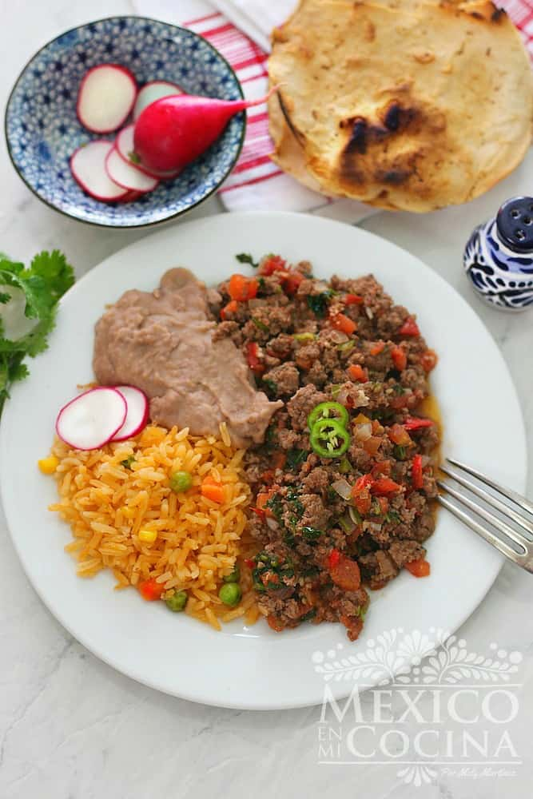

Carne Molida

Receta de Carne Molida a la Mexicana
Ingredientes
- Carne molida
- Sal
- Pimienta negra
- Aceite vegetal
- Cebolla blanca
- Chiles serranos
- Jitomates medianos
- cilantro picado
Pasos
- Sazone la carne con sal y pimienta
- Caliente el aceite en una sarten de tamaño mediano a fuego medio. Agrega la carne molida
y cocina por cinco minutos. La carne comenzara a soltar los jugos.
Home